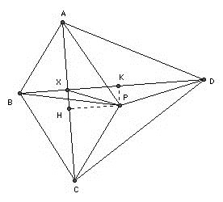

In the convex quadrilateral ABCD, the diagonals AC and BD are perpendicular and the opposite sides AB and DC are not parallel. The point P, where the perpendicular bisectors of AB and DC meet, is inside ABCD. Prove that ABCD is cyclic if and only if the triangles ABP and CDP have equal areas.
Solution

Let AC and BD meet at X. Let H, K be the feet of the perpendiculars from P to AC, BD respectively. We wish to express the areas of ABP and CDP in terms of more tractable triangles. There are essentially two different configurations possible. In the first, we have area PAB = area ABX + area PAX + area PBX, and area PCD = area CDX - area PCX - area PDX. So if the areas being equal is equivalent to: area ABX - area CDX + area PAX + area PCX + area PBX + area PDX = 0. ABX and CDX are right-angled, so we may write their areas as AX·BX/2 and CX·DX/2. We may also put AX = AH - HX = AH - PK, BX = BK - PH, CX = CH + PK, DX = DK + PH. The other triangles combine in pairs to give area ACP + area BDP = (AC·PH + BD·PK)/2. This leads, after some cancellation to AH·BK = CH·DK. There is a similar configuration with the roles of AB and CD reversed.
The second configuration is area PAB = area ABX + area PAX - PBX, area PCD = area CDX + area PDX - area PCX. In this case AX = AH + PK, BX = BK - PH, CX = CH - PK, DX = DK + PH. But we end up with the same result: AH·BK = CH·DK.
Now if ABCD is cyclic, then it follows immediately that P is the center of the circumcircle and AH = CH, BK = DK. Hence the areas of PAB and PCD are equal.
Conversely, suppose the areas are equal. If PA > PC, then AH > CH. But since PA = PB and PC = PD (by construction), PB > PD, so BK > DK. So AH·BK > CH·DK. Contradiction. So PA is not greater than PC. Similarly it cannot be less. Hence PA = PC. But that implies PA = PB = PC = PD, so ABCD is cyclic.

(C) John Scholes
jscholes@kalva.demon.co.uk
26 Oct 1998
Last corrected/updated 19 Aug 03